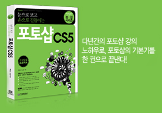

기초적인 기능 하나도 제대로 파악하고 써먹을 수 있게, 개념을 충분히 이해시키고 실습에 임할 수 있는 구성을
채용하였습니다. 체계적인 내용 정리로 기본기를 꽉 다잡아 보세요.
한 번 배운 내용을 확실히 내 것으로, 충분한 활용 실습!
각 장에서 배운 기능을 확실히 복습할 수 있도록 실전 문제를 풀어보는 코너를 제공합니다. 포토샵의 막강
기능을 자연스럽게 내 것으로 만들어 활용해 보세요.
곁에 두고 바로 꺼내보는, 든든한 길잡이!
포토샵을 사용하면서 궁금해 할 수 있는 다양한 팁을 Q&A 형태의 책 속 부록으로 제공합니다.
본문에서 다루는 핵심 기능과 실습 문제, 게다가 다양한 팁까지 곁에 두는 것만으로도 든든한 길잡이가 되어줄 것입니다.

"사용자의 아이디어로 만들었다."라는 슬로건처럼 포토샵은 사용자의 편의성과 호환성, 안정성을
자랑하며, 출시되자마자 선풍적인 인기를 끌며 꾸준한 판매고를 올리면서 그 입지를 굳히고 있습니다.
실행속도가 굉장히 빨라졌고, 이전 버전의 윈도우에서 여러 단계를 거쳐야 했던 작업들이 획기적으로 단축되었습니다. 메모리 및
전력효율도 탁월하게 좋아졌으며, 멀티미디어 기능은 더욱 더 막강해졌고, 네트워킹 역시 아주 간편해졌습니다.